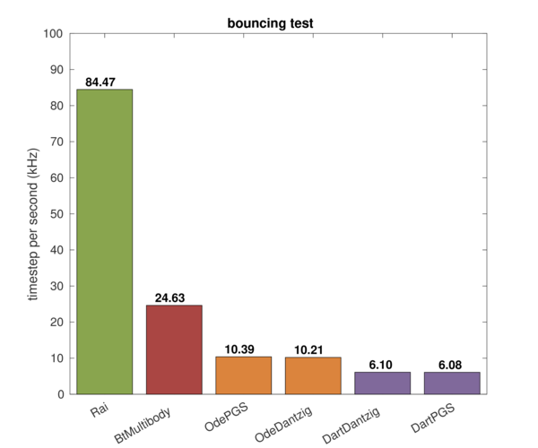

The setup of the test is as follows:


The following figure is accuracy-speed plot of elastic collision case.
The elastic collision between rigid body objects preserves energy. However, the system energy slightly increased over time in the physics engines, that is caused by contact impulse error. There is clear inverse-relationship between speed-accuracy.
Among the engines, RaiSim remarkably has good speed-accuracy curve than others. Its elastic collision simulation is not only accurate but also considerably faster than other engines:
